Desmontaje de la caja de cambios
Herramientas especiales
| • | DT-46496 Herramienta de montaje de engranaje/cojinete |
| • | DT-49082 Herramienta de desmontaje y montaje de cojinetes de agujas |
| • | DT-49084 Herramienta de retención del árbol de entrada. |
Si desea informarse sobre herramientas regionales equivalentes, consultar Herramientas especiales
- Desmonte el cambio manual. Consultar Sustitución de la caja de cambios .
- Desmonte el brazo de desembrague. Consultar Sustitución de la palanca del pedal de embrague .
- Desmonte el eje, casquillo y cojinete de desembrague Consultar Desmontaje del cojinete de desembrague .

- Desmonte los pernos del soporte del cable del embrague (1) y el soporte (2).

- Desmonte el selector del cambio, los pernos del soporte del cable de la palanca de cambio (1) y las arandelas (2).
- Desmonte el selector del cambio, el soporte del cable de la palanca de cambio (3) y el casquillo (4).

- Retire el interruptor de la luz de marcha atrás (1).
- Quite el tornillo del conjunto del engranaje conducido del velocímetro (2).
- Desmonte el conjunto del engranaje conducido del velocímetro (3).
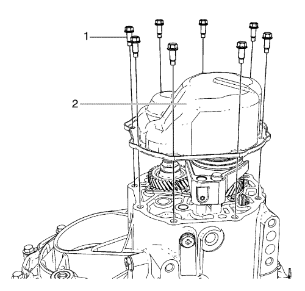
- Desmonte los 8 tornillos de la tapa lateral (1).
- Use un martillo de goma para desmontar la tapa lateral (2).
- Quite el sellante que hay en la tapa lateral y la carcasa de la caja de cambios.
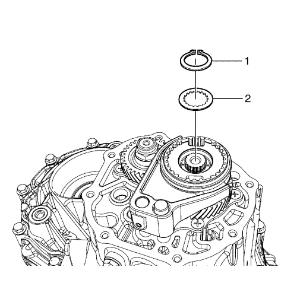
- Desmonte el circlip del eje primario (1).
- Desmonte el plato del cubo de sincronizado de 5ª marcha (2).
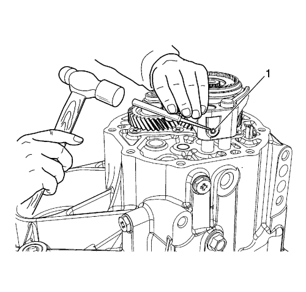
- Quite el pasador de horquilla de selección de 5ª marcha (1) con un punzón botador y un martillo.
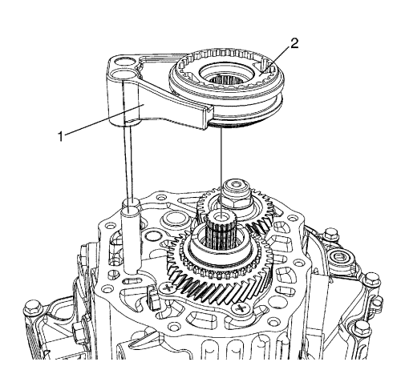
- Tire de la horquilla de selección de 5ª marcha del eje primario (1) y el conjunto de cubo del sincronizador (2) y retírelos juntos.
- Desmonte el anillo del sincronizador, las palancas y el manguito del conjunto de cubo del sincronizador de 5ª marcha.
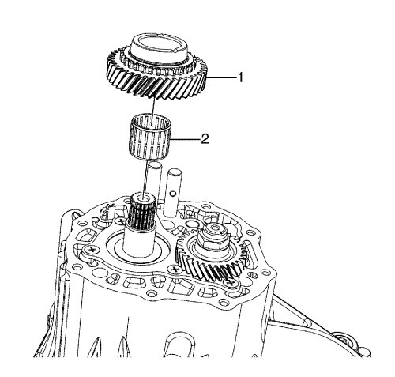
- Tire de la 5ª marcha del eje primario (1) para extraerla.
- Desmonte el cojinete de 5ª marcha del eje primario (2).
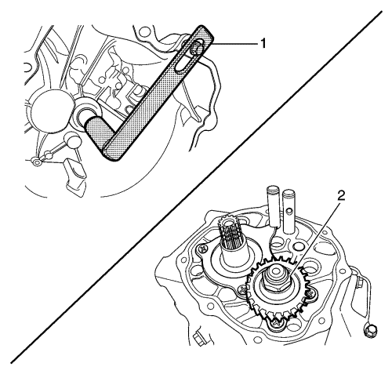
- Mueva la palanca selectora hasta la posición de 4ª marcha.
- Sujete el eje primario con el soporte del eje primario DT-49084 (1).
- Retire el enmasillado y la tuerca de 5ª marcha del contraeje (2).
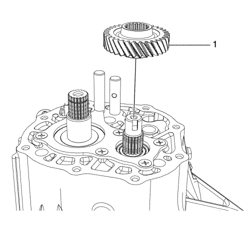
- Retire la 5ª marcha del contraeje (1).
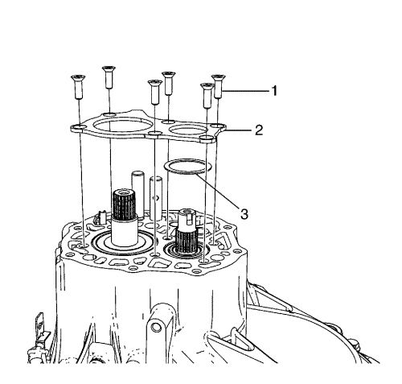
- Desmonte los 6 tornillos de la placa de la carcasa izquierda (1).
- Desmonte la placa de la carcasa izquierda (2).
- Retire el suplemento del cojinete del contraeje (3).

- Desmonte el perno y la arandela, el muelle y la bola del cambio de 1ª-2ª marcha (1).
- Desmonte el perno y la arandela, el muelle y la bola del cambio de 3ª-4ª marcha (2).

Nota: No se puede desmontar la carcasa (izquierda) sin haber quitado el tornillo del eje del engranaje intermedio de marcha atrás.
- Quite el tornillo del eje del engranaje intermedio de marcha atrás (1).

- Quite los tornillos (1) del lado derecho de la carcasa.

- Quite los 12 tornillos (1) del lado izquierdo de la carcasa.
- Desmonte la carcasa del lado izquierdo golpeándola suavemente con un martillo de goma.
- Retire el sellante que hay en la carcasa.
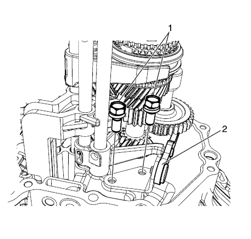
- Retire los tornillos (1).
- Desmonte la palanca de cambio de marcha atrás (2).
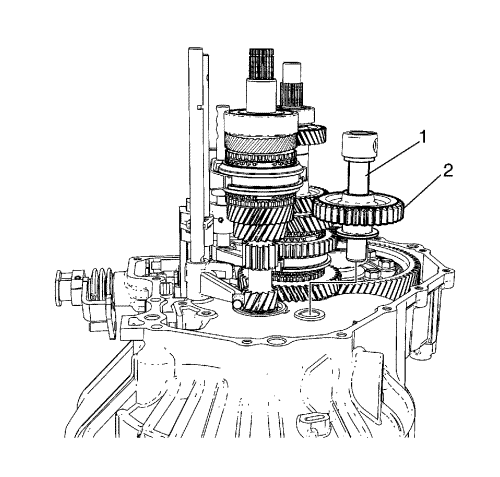
- Empuje el engranaje intermedio de marcha atrás hacia la carcasa interior.
- Tire del eje y desmonte el engranaje intermedio de marcha atrás (2) y el eje (1).
- Desmonte del conjunto de eje el engranaje intermedio de marcha atrás (2).
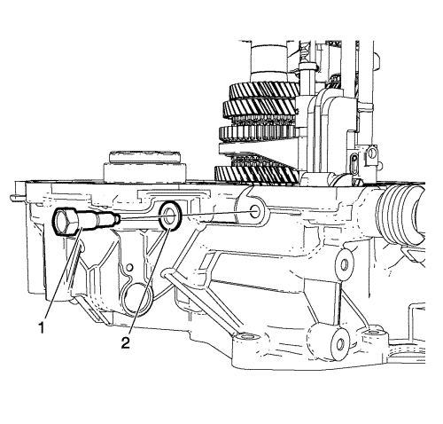
Nota: Extraiga totalmente el tornillo de enclavamiento del cambio de marchas. De lo contrario, no podrá desmontarse el conjunto del eje y cambio de marchas.
- Desmonte el perno (1) y la arandela (2) de interbloqueo de cambio.
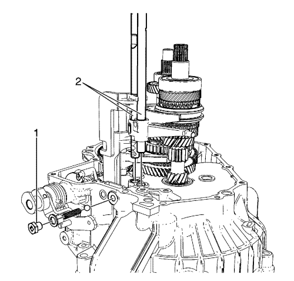
- Desmonte el perno y la arandela, el muelle y la bola del cambio de 5ª marcha y marcha atrás (1).
- Desmonte el eje de selección de 5ª marcha y marcha atrás (2).
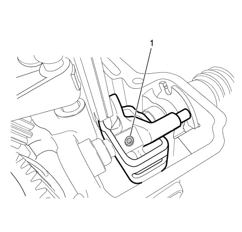
- Quite los pasadores interior y exterior de la palanca selectora y de cambio (1).
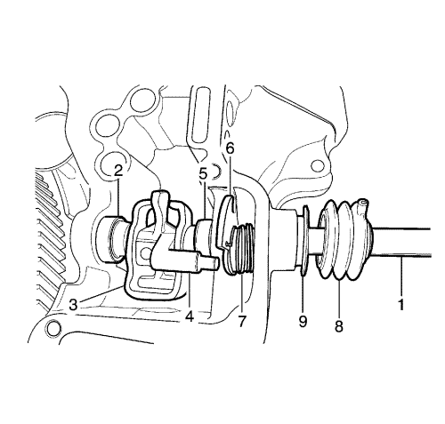
- Desmonte el eje del selector y cambio (1).
- Desmonte el conjunto de muelles del selector (2).
- Desmonte el plato de enclavamiento del cambio de marchas (3).
- Desmonte la palanca de cambio (4).
- Desmonte el conjunto de muelles del selector (5).
- Desmonte la leva de selección de 5ª marcha y marcha atrás (6).
- Desmonte el muelle de retorno (7).
- Desmonte los fuelles del selector y del cambio de marchas (8).
- Desmonte el retén de aceite del eje del selector y del cambio de marchas (9).

Nota: Tenga cuidado para no dañar los dientes del piñón del contraeje ni la corona del diferencial.
- Desmonte el mecanismo y el conjunto del eje del cambio (1) a la vez.
- Desmonte del mecanismo el conjunto del eje del cambio de velocidad baja y alta.
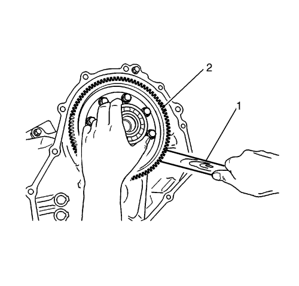
- Inserte un mecanismo de palanca de madera (1) en el lado inferior del diferencial.
- Desmonte el conjunto del diferencial (2) moviéndolo a derecha e izquierda.
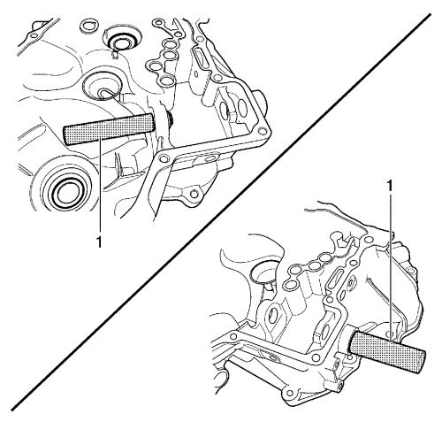
- Desmonte el cambio y seleccione los cojinetes de agujas del eje usando la herramienta de desmontaje y montaje de cojinetes de agujas DT-49082 (1)
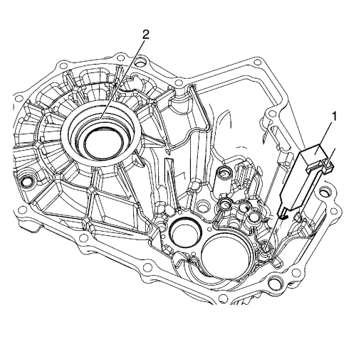
- Quite el canalón de aceite (1).
- Use un martillo y un cincel de cobre para quitar el retén de aceite del lado izquierdo del diferencial (2).
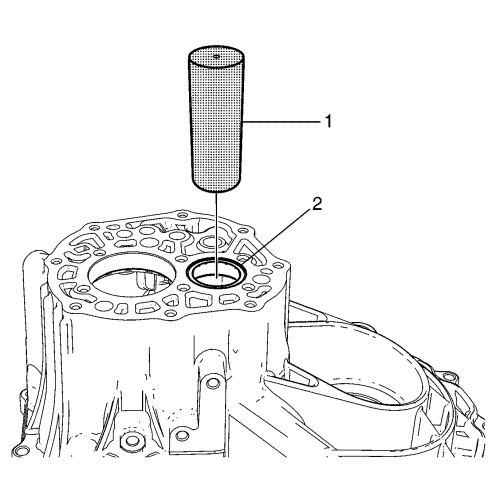
- Desmonte la pista exterior de cojinete de contraeje (2) usando la herramienta de montaje de engranajes y cojinetes DT-46496 (1) y un martillo.
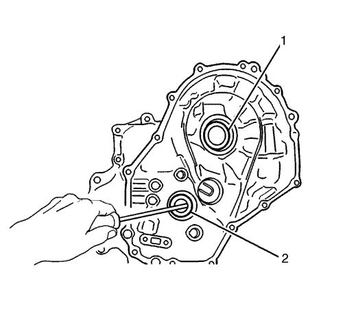
- Use un martillo y un cincel de cobre para quitar el retén de aceite del lado derecho del diferencial (1)
- Use un destornillador para desmontar el retén de aceite del eje primario (2).
| © Copyright Chevrolet Europe. Reservados todos los derechos |